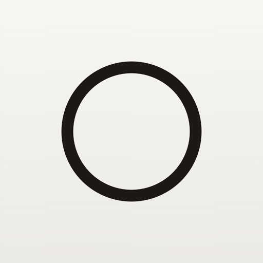

体づくりの記録を、
静かに続ける。
トレーニングも、体重も、体の写真も。ひとつの落ち着いた場所に束ね、次の一歩をそっと示します。続けるほどに、あなたの歩みが積み重なっていきます。


次の目標をそっと
過去の記録から、今日狙う重量と回数を一行で提示。ログを掘り返さず、迷わず次のセットへ。
写真スタジオ
同じ向きで撮り重ね、前回をうっすら重ねて構図を合わせる。Before / After スライダーやタイムラプスで変化を見返せます。
体組成の推移
体重・体脂肪をなめらかな線で。目標ラインを重ねて、今の位置を静かに確かめられます。
月次の章
その月の歩みを、写真・体組成・挙上の動き・頻度で一篇の章に。煽らず、ただ事実を物語に。
インターバル
セットの合間を、ゴールドのリングが静かに数えます。集中を切らさずに。
端末の中で完結
記録も体型写真も、原則あなたの端末の中に。私たちは見ません。広告も追跡もありません。
まずは、無料ではじめられます。
トレーニングの記録も、体重も、体の写真も無料で。無料では直近 10 日分の記録を表示し、それより前は Pro でいつでも見返せます。これまでの歩みが消えることはありません。
全期間の保持
10 日より前も含めて、写真・推移・月次の章をすべて見返せます。
iCloud バックアップ
あなた自身の iCloud に同期。端末を変えても記録を守れます。
ヘルスケア連携
体重・体脂肪をヘルスケアから取り込み、記録の手間を減らします。
記録は無料のまま
トレーニングの記録とインターバルは、いつでも無料で使えます。
価格は税込・自動更新です。解約・更新の詳細は 特定商取引法に基づく表記 をご覧ください。
あなたの体は、あなたのもの。
体型写真という機微なデータを扱うからこそ、KATACHI は外部にデータを送りません。サブスクリプションの判定も Apple の StoreKit のみで行い、行動追跡サービスや広告 SDK は一切使っていません。詳しくは プライバシーポリシー をご覧ください。
KATACHI は無料で使えますか？
トレーニングの記録・体重・体型写真は無料で使えます。無料では直近 10 日分の記録を表示し、それより前の全期間の見返し・iCloud バックアップ・ヘルスケア連携は Pro（月額 ¥270／年額 ¥2,400）で解放できます。これまでの記録が消えることはありません。
体型写真やデータは外部に送信されますか？
いいえ。記録も体型写真も原則あなたの端末の中だけに保存し、外部に送信しません。広告や行動追跡もありません。
種目ごとの記録をグラフで見られますか？
はい。種目ごとに推定 1RM（自重種目は最高回数）の推移をグラフで確認できます。体重・体脂肪の推移グラフ、月次のまとめもあります。
ヘルスケアと連携できますか？
Pro でヘルスケア（HealthKit）から体重・体脂肪を取り込み、記録の手間を減らせます。
対応端末は？
iPhone（iOS）向けのアプリです。